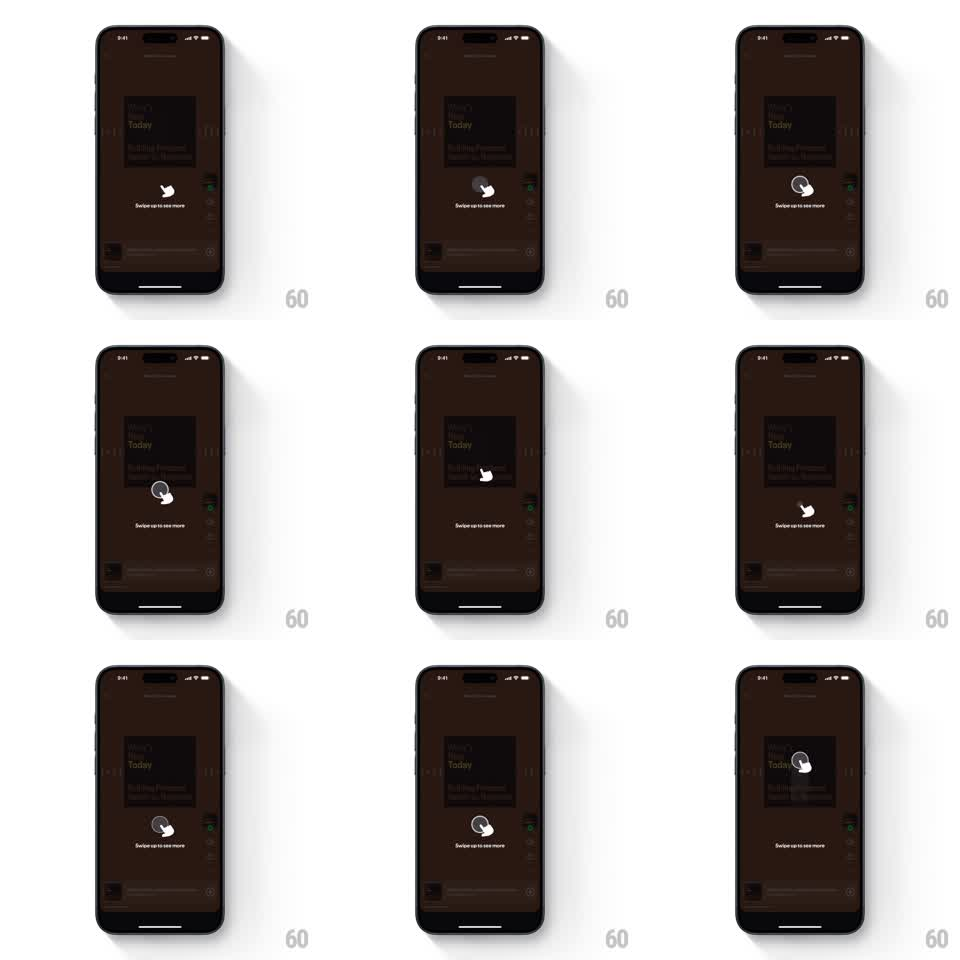

Media
Frame-by-frame

Rebuild this animation 1:1: Spotify's swipe-up tip - an animated hand glyph that loops through a swipe-up gesture over the dimmed screen, teaching the gesture for more content.

Rebuild this animation 1:1: Spotify's swipe-up tip - an animated hand glyph that loops through a swipe-up gesture over the dimmed screen, teaching the gesture for more content. ## Integration Integration: stack-agnostic spec - springs given as stiffness/damping, timed motions as duration + curve; map every value to your framework and animation library of choice. ## Scene The Spotify app behind (a dark "What's New Today" surface) dimmed under a dark scrim. Center-low: a white hand-pointer glyph with a small circular motion arrow around its fingertip, and the caption "Swipe up to see more" beneath. ## Motion spec Pattern: looping gesture-teaching hand animation. - The loop (1.8s): the hand fades in and presses (scale 0.95, 150ms), then travels upward 56pt with a smooth ease (500ms) while the motion ring around the fingertip draws (stroke trim, same 500ms), then everything fades out (250ms) and resets. - A soft touch ripple fires where the hand starts (scale 0 -> 1.5, fade, 300ms). - The caption holds a gentle opacity pulse (0.7 -> 1, synced to the loop). - The tip dismisses on the user's first real swipe up (scrim fades 250ms, hand fades 150ms) or on tap outside. ## Calibration - The hand's travel direction is strictly vertical - no arc. - One clean loop: no double-bounce, no reverse drag. ## Reduced motion Static hand with the caption; single fade in/out. ## Don't miss - The gesture loop must read without text: hand + upward travel + ring. - The dimmed app behind stays interactive-blocked but visible - this is a coach mark, not a modal.